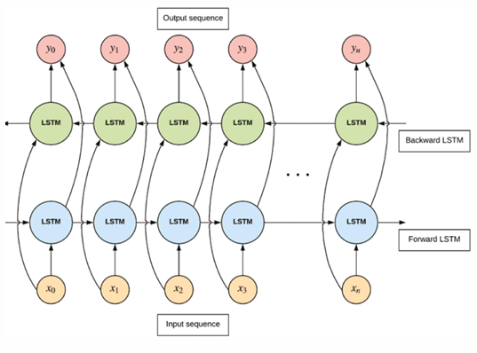

Variants of Recurrent Neural Networks (RNNs): LSTM, GRU, BiLSTM
Introduction
Recurrent Neural Networks (RNNs) are designed to work with sequential data such as time series, language, audio, and video. Unlike feedforward neural networks, RNNs maintain a “memory” of previous inputs using hidden states, allowing them to model temporal dependencies.
However, traditional RNNs suffer from issues such as vanishing and exploding gradients, which makes it difficult for them to learn long-term dependencies. To solve this, several advanced architectures have been developed:
Long Short-Term Memory (LSTM)
Gated Recurrent Units (GRU)
Bidirectional LSTM (BiLSTM)
Each of these offers different trade-offs in terms of complexity, training time, and ability to capture temporal dependencies.
Long Short-Term Memory (LSTM)
What is LSTM?
LSTM is a special kind of RNN capable of learning long-term dependencies. It was introduced in 1997 by Hochreiter and Schmidhuber. Unlike traditional RNNs, LSTM includes gates and a memory cell to control and maintain long-term information.
Analogy:
Imagine you’re reading a novel. You don’t remember every single word, but you store important details—like character relationships and major events—in your long-term memory (cell state). Other trivial details are forgotten. Your brain uses “gates” to decide what to remember and what to ignore.
Key Components:
Cell State (\(c_t\)): Acts like a conveyor belt, carrying long-term information.
Input Gate (\(i_t\)): Controls how much new information should be added.
Forget Gate (\(f_t\)): Decides what information to discard.
Output Gate (\(o_t\)): Determines what information to pass to the next hidden state (\(h_t\)).
from tensorflow import kerasfrom tensorflow.keras import layersimport numpy as np# Generate random training dataX_train = np.random.rand(100, 10, 1) # 100 samples, 10 time steps, 1 featurey_train = np.random.rand(100, 10, 10) # 100 samples, 10 time steps, 10 output features# Define the modelmodel = keras.models.Sequential([ layers.LSTM(20, return_sequences=True, input_shape=[None, 1]), layers.LSTM(20, return_sequences=True), layers.TimeDistributed(layers.Dense(10))])# Compile the modeloptimizer ='adam'# Adaptive learning rate optimizerloss ='mean_squared_error'# Loss function for regression tasksmodel.compile(optimizer=optimizer, loss=loss)# Train the modelmodel.fit(X_train, y_train, epochs=10, batch_size=32)
Epoch 1/10
C:\Users\roess\Documents\repos\Notes\myvenv312\Lib\site-packages\keras\src\layers\rnn\rnn.py:200: UserWarning:
Do not pass an `input_shape`/`input_dim` argument to a layer. When using Sequential models, prefer using an `Input(shape)` object as the first layer in the model instead.
<keras.src.callbacks.history.History at 0x265a2bd6bd0>
Peephole Connections:
In traditional LSTM, the gates only depend on the current input and previous hidden state. In models with peephole connections, the gates can also consider the cell state. This allows for more precise control over the information flow, enhancing the model’s ability to learn long-term dependencies. This improvement can lead to better performance in tasks requiring the retention of information over extended sequences. Additionally, peephole connections can help mitigate the vanishing gradient problem, making it easier for the network to learn from longer sequences.
Analogy: It’s like checking your entire calendar (cell state) before deciding whether to add a new event (input gate) or remove one (forget gate).
Gated Recurrent Units (GRU)
What is GRU?
GRU is a simplified version of LSTM introduced by Cho et al. in 2014. It combines the forget and input gates into a single “update gate” and merges the cell state and hidden state. This reduces the number of parameters compared to LSTM, making GRU faster to train and less prone to overfitting.
Analogy: It’s like having a simplified checklist that helps you decide what to keep and what to discard from your past experiences.
Key Components:
Update Gate (\(z_t\)): Controls how much of the past information to keep.
Reset Gate (\(r_t\)): Decides how much of the past information to forget.
Candidate Activation (\(\tilde{h}_t\)): New candidate hidden state.
model = keras.models.Sequential([# input_shape=[None, 1]: 'None' represents variable time steps, and '1' represents one feature per time step# Ensures the output is a sequence, allowing the next layer to process it layers.GRU(20, return_sequences=True, input_shape=[None, 1]), layers.GRU(20, return_sequences=True),# TimeDistributed layer to apply a Dense layer to each time step.# This ensures that the Dense layer is applied independently to each time step in the sequence. layers.TimeDistributed(layers.Dense(10))])
Bidirectional LSTM (BiLSTM)
What is BiLSTM?
BiLSTM is an extension of LSTM that processes the input sequence in both forward and backward directions. This allows the model to capture information from past and future contexts simultaneously, enhancing its ability to understand the sequence bidirectionally.
Analogy: It’s like reading a book from both ends to get a complete understanding of the plot and characters.
Visual Diagram:

BiLSTM - Visual Representation
Architecture:
Two LSTM layers: One processes the sequence from the beginning, and the other from the end.
Concatenation: The outputs from both directions are combined at each time step.
model = keras.models.Sequential([ layers.Bidirectional(layers.LSTM(20, return_sequences=True), input_shape=[None, 1]), layers.Bidirectional(layers.LSTM(20, return_sequences=True)), layers.TimeDistributed(layers.Dense(10))])
C:\Users\roess\Documents\repos\Notes\myvenv312\Lib\site-packages\keras\src\layers\rnn\bidirectional.py:107: UserWarning:
Do not pass an `input_shape`/`input_dim` argument to a layer. When using Sequential models, prefer using an `Input(shape)` object as the first layer in the model instead.
Applications:
Speech recognition
Named entity recognition
Machine translation
Comparison Table:
Feature
LSTM
GRU
BiLSTM
Architecture
3 gates (input, forget, output)
2 gates (update, reset)
4 gates (2 forward, 2 backward)
Complexity
High
Medium
Very High
Training Speed
Slow
Fast
Slow
Performance
Long sequences
Small datasets
Bidirectional tasks
Overfitting
Less prone
More prone
Less prone
Conclusion
LSTM, GRU, and BiLSTM each have unique strengths:
LSTM is effective for learning long-term dependencies.
GRU is simpler, faster, and less prone to overfitting.
BiLSTM captures bidirectional context for improved understanding.